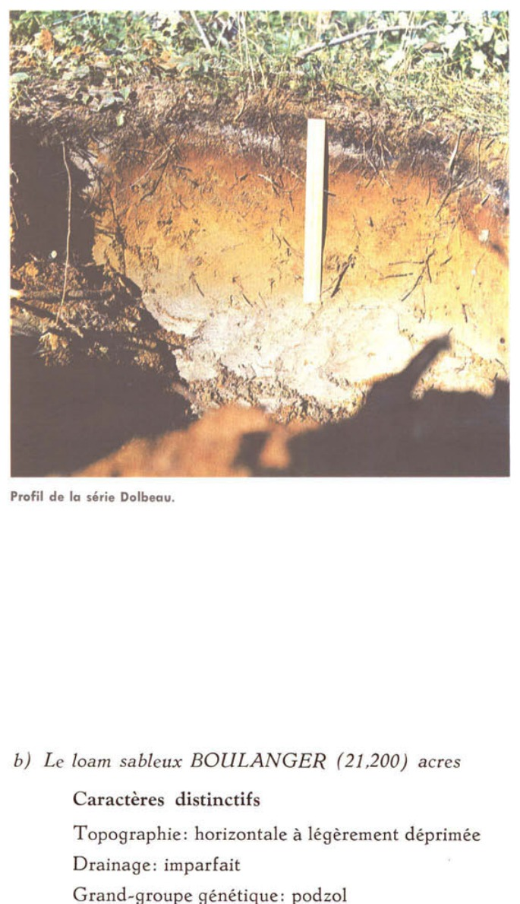
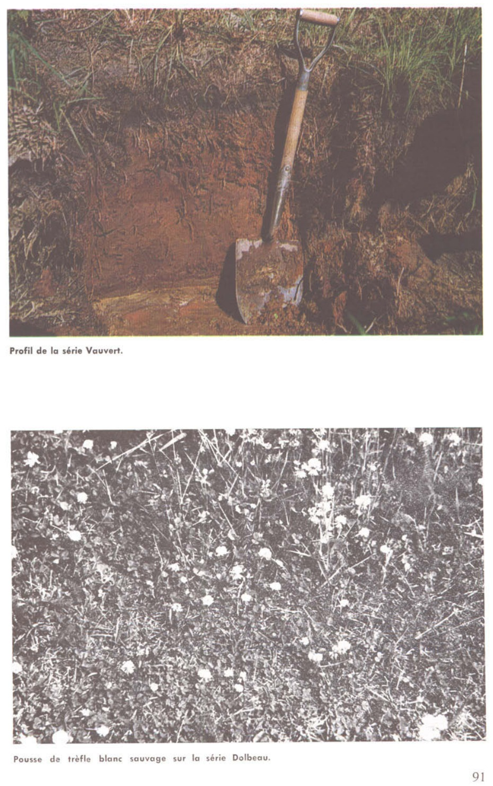

Identification & Caractéristiques Générales
Le matériau parental de la série Dolbeau est constitué de dépôts meubles superficiels à texture de loam sableux, caractérisés par une proportion variable de limon, mis en place dans le contexte physiographique de la région du Lac-Saint-Jean et des basses-terres du Saguenay. Géomorphologiquement, ces sols occupent préférentiellement les berges des cours d'eau ainsi que des terrasses basses situées à des niveaux inférieurs à ceux de la caténa Parent, avec laquelle ils présentent des affinités pédogénétiques. La topographie associée à cette série varie d'horizontale à légèrement ondulée, influençant directement les conditions de redistribution hydrique superficielle et la dynamique des profils au sein de la caténa.
Le profil morphologique se caractérise par une texture dominante de loam sableux et un drainage naturel bon, classant ce membre de la caténa dans les conditions d'oxydation adéquates pour le développement de profils exempts de mottles de gleyisation prononcés dans la partie supérieure du solum. La perméabilité est généralement modérément rapide à rapide en raison de la forte composante sableuse, limitant la rétention excessive d'eau en période de ressuyage. Le pH est caractérisé par une réaction acide inhérente aux matériaux podzolisés ou brunisés de la région boréale et subboréale du Québec, nécessitant un suivi régulier de la saturation en bases.
Sur le plan agronomique, les sols de la série Dolbeau sont exploités pour les grandes cultures, les productions fourragères et, localement, pour diverses cultures maraîchères, bien que leur vocation puisse inclure des secteurs boisés. Les limitations majeures découlent de leur texture grossière, qui induit une capacité de rétention en eau et en éléments fertilisants inférieure à celle des sols argileux ou limoneux, exposant les cultures à des déficits hydriques temporaires lors de périodes de sécheresse estivale. Les pratiques de régie requis incluent des apports organiques réguliers pour maintenir le taux de matière organique, une fertilisation fractionnée pour contrer le risque de lixiviation des éléments nutritifs mobiles, ainsi qu'un chaulage correctif pour neutraliser l'acidité et optimiser l'assimilation des nutriments par les cultures.
Caractères Distinctifs & Morphologie Génétique (Comté de Chicoutimi — Page 72)
- Topographie : horizontale à ondulée
- Drainage : bon
- Grande-groupe génétique : podzol
- Degré d'érosion : modéré (D2)
- Classe d'utilisation : 4 (3)
- Association géographique : séries Shipshaw, Boulanger, Lapointe, Valin, Bourget
- Végétation naturelle : trembles, épinettes, sapins; bleuets, comptonie, etc.
Classification Taxonomique & Environnement Pédologique
| Ordre Pédologique | Podzolique |
|---|---|
| Grand Groupe (SCSS) | Podzol humo-ferrique |
| Sous-Groupe Taxonomique | Podzol humo-ferrique orthique |
| Famille Pédologique | Limoneuse-grossière, mixte sableux, acide |
| Mode de Dépôt Parental | Fluvio-lacustre |
| Classe de Drainage Naturel | Bien drainé |
| Régime Thermique & Humidité | Frais / Subhumide |
Description Morphologique du Profil Type
Séquences génétiques des horizons pédologiques caractérisant le profil type représentatif de la série Dolbeau :
Profil forestier / boisé — Comté de Chicoutimi
✓ Source : Comté de Chicoutimi — Page 73Couleur Munsell : Non précisée
Structure & Consistance : Polyédrique à granulaire
Description morphologique : Matière organique du type mor, faiblement décomposée; noire (7.5R 2.0); pH: 5.5.
Couleur Munsell : 5YR 7/1
Structure & Consistance : Polyédrique à granulaire
Description morphologique : Loam sableux, gris clair (5YR 7/1); horizon irrégulier pouvant descendre jusqu'à 4 pouces d'épaisseur (10 cm); pH: 4.5.
Couleur Munsell : 10YR 5/8
Structure & Consistance : Polyédrique à granulaire
Description morphologique : Loam sableux brun jaune (10YR 5/8); pH: 5.3.
Couleur Munsell : 10YR 6/8
Structure & Consistance : Polyédrique à granulaire
Description morphologique : Sable fin limoneux à loam sableux brun jaune (10YR 6/8); pH: 5.3.
Couleur Munsell : 2.5Y 5/4
Structure & Consistance : Polyédrique à granulaire
Description morphologique : Loam sableux fin, olive clair (2.5Y 5/4); pH: 5.4.
Couleur Munsell : 2.5Y 5/2
Structure & Consistance : Polyédrique à granulaire
Description morphologique : Loam sableux fin gris brun (2.5Y 5/2); pH: 5.5.
Profil représentatif — Pédologie de la région du Lac-Sa
✓ Source : Pédologie de la région du Lac-Sa — Page 87Couleur Munsell : Non précisée
Structure & Consistance : Polyédrique à granulaire
Description morphologique : Litière de feuilles et de brindilles, plus de matière organique en voie de décomposition, brun-noir; pH: 4.8.
Couleur Munsell : 7.5YR 8/2
Structure & Consistance : Polyédrique à granulaire
Description morphologique : Loam sableux gris-blanc-rose (7.5YR 8/2); pH: 5.0.
Couleur Munsell : 5YR 4/6
Structure & Consistance : Finement mietteuse
Description morphologique : Loam sableux rouge-jaune (5YR 4/6); structure finement mietteuse, poreuse, très friable; pH: 4.9.
Couleur Munsell : 7.5YR 5/8
Structure & Consistance : Grumeleuse très faiblement développée à particulaire
Description morphologique : Loam sableux brun vif (7.5YR 5/8); structure grumeleuse très faiblement développée à particulaire; très friable; pH: 4.8.
Couleur Munsell : 2.5Y 6/5
Structure & Consistance : Polyédrique à granulaire
Description morphologique : Loam sableux jaune-olive (2.5Y 6/5); particulaire, plus tassé, plus dense que B 22 ; pH: 4.9.
Couleur Munsell : 2.5Y 5/4
Structure & Consistance : Polyédrique à granulaire
Description morphologique : Loam sableux olive clair (2.5Y 5/4); assez compact; plus sableux en profondeur; pH: 4.9.
Profils Photographiques & Planches de Terrain
Documents iconographiques, figures pédologiques et coupes de terrain documentées dans les mémoires d'inventaire pour de la série Dolbeau :


Propriétés Physico-Chimiques & Analyses de Laboratoire
| Horizon | Prof. (pces/cm) | Sable % | Limon % | Argile % | pH | C % | N % | Ca éch. | Mg éch. | K éch. | H+ éch. | Bases tot. | C.E.C. (meq/100g) | Saturation % |
|---|---|---|---|---|---|---|---|---|---|---|---|---|---|---|
| L-H | 1-1½-2.5/3.8 | — | — | — | 5.5 | 32.78 | 1.55 | 26.9 | 6.6 | 1.48 | 15.7 | 35.0 | 50.7 | 69.0 |
| Ae | 1-2/2.5-5 | 59.4 | 37.8 | 2.8 | 4.5 | 0.72 | 0.04 | 0.6 | 0.2 | 0.08 | 0.8 | 0.9 | 1.7 | 53.0 |
| Bf1 | 3/7.5 | 56.8 | 39.2 | 4.0 | 5.3 | 2.31 | 0.12 | 1.8 | 0.1 | 0.10 | 8.3 | 2.0 | 10.3 | 19.4 |
| Bf2 | 5/12.5 | 58.8 | 38.8 | 2.4 | 5.3 | 0.86 | 0.04 | 0.6 | 0.1 | 0.08 | 2.8 | 0.8 | 3.6 | 22.2 |
| Bf3 | 7/17.8 | 32.8 | 65.2 | 2.0 | 5.4 | 0.67 | 0.04 | 0.6 | 0.1 | 0.08 | 2.1 | 0.8 | 2.9 | 27.6 |
| C1 | 6/15.3 | 30.8 | 67.0 | 1.6 | 5.5 | 0.47 | 0.03 | 0.4 | 0.1 | 0.05 | 1.5 | 0.6 | 2.1 | 28.6 |
Particularités Régionales, Phases & Variantes Pédologiques
Déclinaisons régionales, faciès texturaux, phases d'érosion ou de pierrosité et variantes cartographiées par étude pour de la série Dolbeau :
| Étude Régionale | Symbole | Appellation / Phase / Variante | Différenciation avec la série type (Analyse pédologique) |
|---|---|---|---|
| Comté de Chicoutimi | Db |
Dolbeau loam sableux | Modalité modale de référence (type de base de la série). |
| Pédologie de la région du Lac-Saint-Jean | Db |
Dolbeau loam sableux | Conforme à la série type de référence (caractéristiques texturales et drainage identiques). |
Distribution Pédo-Paysagère & Représentativité Cartographique (Couverture PPS 2026)
- Boulanger loam sableux (BLG) — co-occurrente dans 99 polygone(s)
- Parent sable (PAT) — co-occurrente dans 84 polygone(s)
- Taillon loam (TLL) — co-occurrente dans 44 polygone(s)
Aptitudes Agronomiques, Hydropédologie & Conservation des Sols
Indicateurs Hydropédologiques & Vulnérabilité à l'Érosion (BDHP 2026)
Interprétation BDHP : Potentiel de ruissellement modérément faible. Infiltration modérée avec textures moyennes à modérément grossières.
Classement selon l'Inventaire des Terres du Canada (ITC / CLI) : Classe 1.
- Potentiel agricole : Terroir adapté aux cultures régionales selon la texture dominante et la régie de drainage.
- Contraintes majeures : Bien drainé. Risque d'engorgement temporaire ou d'excès d'eau printanier.
- Gestion & Aménagement : Drainage souterrain ou superficiel préconisé sur les terres planes. Chaulage et apport organique régulier selon les bilans agronomiques.
- Cultures adaptées : Grandes cultures (maïs, soya, céréales), prairies fourragères et cultures maraîchères selon le contexte géomorphologique.